<!-- ─────────────────────────────────────────────────────────────────────────
     Capítulo 7 · Plano de la sede (manual del Administrador).
     Capturas: administrador/capturas-plano.cjs → img/administrador-plano/
     ───────────────────────────────────────────────────────────────────────── -->
<style>.cuando { break-after: avoid; }</style>
<section class="capitulo">
  <h1><span class="num">7</span>Plano de la sede</h1>
  <p class="entrada">El plano es el dibujo de la tienda vista desde arriba, con cada mueble en su lugar y su código (<code>PUN-01</code>, <code>GON-03</code>…). Todo sale de acá: lo que se vende en Contratos, lo que se monta y lo que miden los Indicadores. Si un mueble no está en el plano, para RECABRA no existe.</p>

  <table>
    <tr><th style="width:24%">Vista</th><th>Para qué</th></tr>
    <tr><td><b>2D</b></td><td>Mirar el plano y <b>editarlo</b>: agregar, mover, girar, renombrar y borrar muebles. Es la única vista donde se cambia el plano.</td></tr>
    <tr><td><b>3D</b></td><td>Mirar la tienda: recorrerla, mostrársela al proveedor y repartir las caras por porcentaje. No mueve muebles.</td></tr>
    <tr><td><b>Muebles</b></td><td>Los muebles propios del supermercado («Mis muebles»), con sus medidas.</td></tr>
    <tr><td><b>Caras</b></td><td>La lista de control: qué va en cada cara y cómo va su montaje.</td></tr>
  </table>

  <h2 class="proceso">7.1 Mirar y Editar</h2>
  <p class="cuando"><b>Cuándo:</b> cada vez que entrás al plano. Arranca en <span class="texto-pantalla">Mirar</span>, para que nada se mueva sin querer.</p>
  <ol class="pasos">
    <li><p>En el menú de la izquierda tocá <span class="boton">Plano</span>. Arriba elegí la sede. El plano abre en <span class="boton">Mirar</span>: tocar un mueble abre su ficha, pero no lo mueve.</p>
      <figure class="mitad">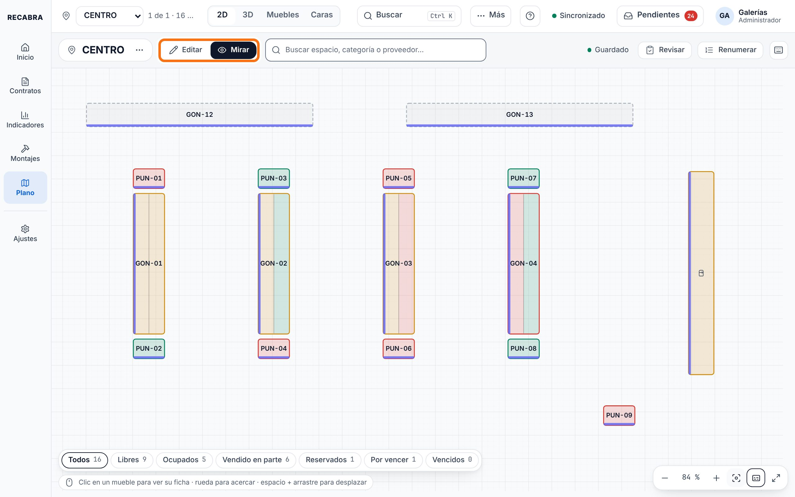</figure></li>
    <li><p>Para cambiar algo tocá <span class="boton">Editar</span>. Aparecen a la izquierda la tira de muebles para colocar (1) y arriba la barra de herramientas (2): <span class="texto-pantalla">Seleccionar</span>, <span class="texto-pantalla">Deshacer</span>, <span class="texto-pantalla">Rehacer</span>, <span class="texto-pantalla">Rotar</span>, <span class="texto-pantalla">Duplicar</span> y <span class="texto-pantalla">Eliminar</span>.</p>
      <figure class="mitad">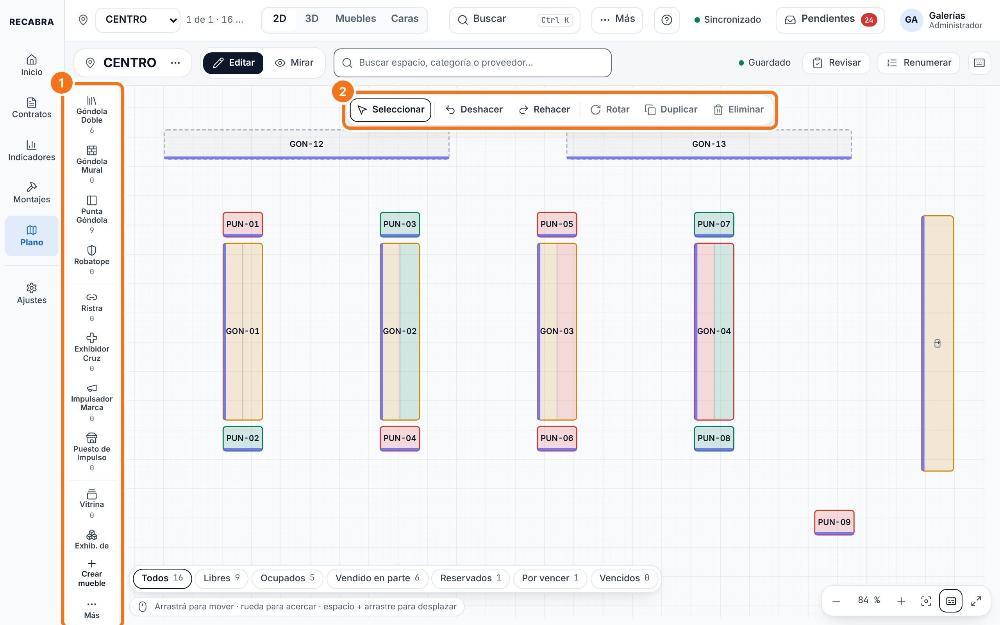</figure></li>
  </ol>
  <div class="caja truco"><span class="rotulo">Moverse por el plano</span><p>La <b>rueda del mouse</b> acerca y aleja. Para desplazarte, mantené apretada la <b>barra espaciadora</b> y arrastrá. El botón del recuadro con un punto, abajo a la derecha, (<span class="texto-pantalla">Centrar en todo</span>) vuelve a mostrar la sede entera. Los cambios se guardan solos: arriba dice <span class="texto-pantalla">Guardado</span>.</p></div>

  <h2 class="proceso">7.2 Buscar un espacio y filtrar</h2>
  <p class="cuando"><b>Cuándo:</b> para encontrar un mueble rápido, o ver de un vistazo qué está libre o por vencer.</p>
  <ol class="pasos">
    <li><p>Escribí el código en <span class="texto-pantalla">Buscar espacio, categoría o proveedor…</span>. El mueble queda resaltado y el resto se apaga; al lado dice cuántos encontró (<span class="texto-pantalla">1 de 16</span>). La <b>×</b> borra la búsqueda.</p></li>
    <li><p>Abajo están los filtros: <span class="texto-pantalla">Todos</span>, <span class="texto-pantalla">Libres</span>, <span class="texto-pantalla">Ocupados</span>, <span class="texto-pantalla">Vendido en parte</span>, <span class="texto-pantalla">Reservados</span>, <span class="texto-pantalla">Por vencer</span> y <span class="texto-pantalla">Vencidos</span>, cada uno con cuántos hay. Tocá uno para resaltar sólo esos. En el ejemplo, <span class="texto-pantalla">Por vencer</span> marca la <code>PUN-01</code>.</p>
      <figure class="dos pc">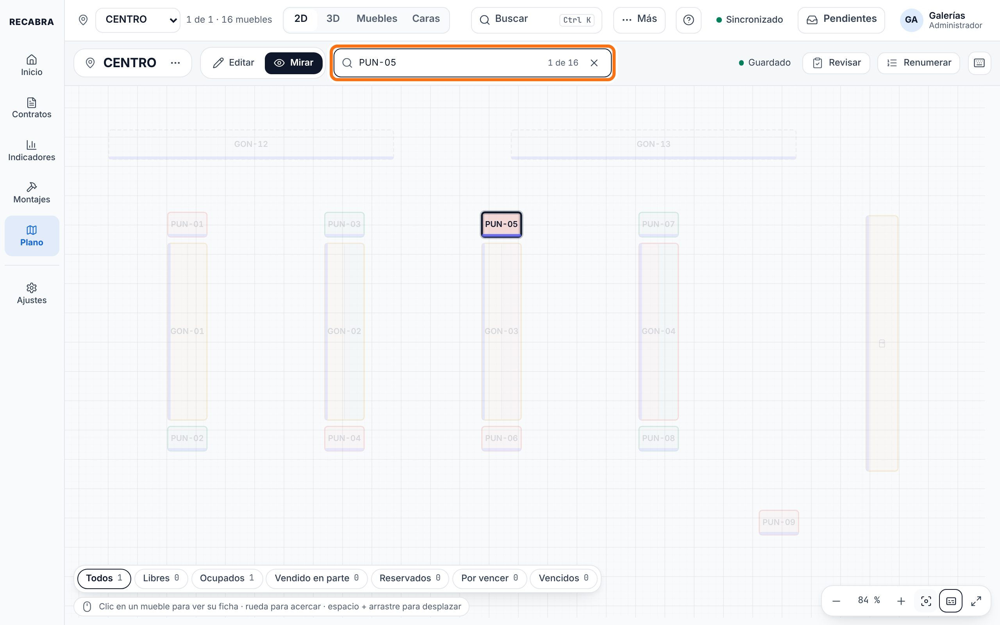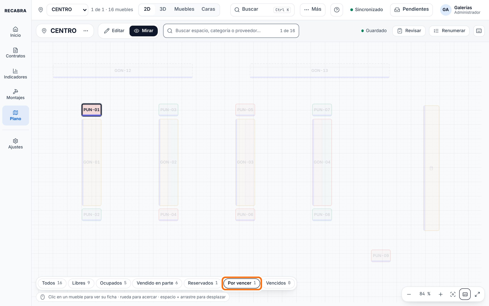</figure></li>
  </ol>
  <div class="caja error"><span class="rotulo">Si no lo encuentra</span><p>Buscá por el <b>código</b> del mueble. Por proveedor encuentra los muebles vendidos enteros, pero no siempre los que se venden por entrepaños o por porcentaje (ver <i>Posibles errores</i> en las notas del capacitador). Volvé a <span class="texto-pantalla">Todos</span> para ver la sede entera.</p></div>

  <h2 class="proceso">7.3 La ficha de un mueble</h2>
  <p class="cuando"><b>Cuándo:</b> para saber qué es, cuánto mide, si está vendido y hasta cuándo.</p>
  <ol class="pasos">
    <li><p>Tocá el mueble. A la derecha se abre su ficha: el código, el tipo, la sede y el pasillo, el estado (<span class="texto-pantalla">Ocupado</span>, <span class="texto-pantalla">Disponible</span>…), las medidas y una vista 3D que podés girar. Debajo, tres pestañas: <span class="texto-pantalla">Venta</span>, <span class="texto-pantalla">Medidas</span> y <span class="texto-pantalla">Documentos</span>. En <span class="texto-pantalla">Venta</span>, al final, <span class="texto-pantalla">CONTRATADO</span> dice quién lo tiene y hasta cuándo.</p>
      <figure class="mitad">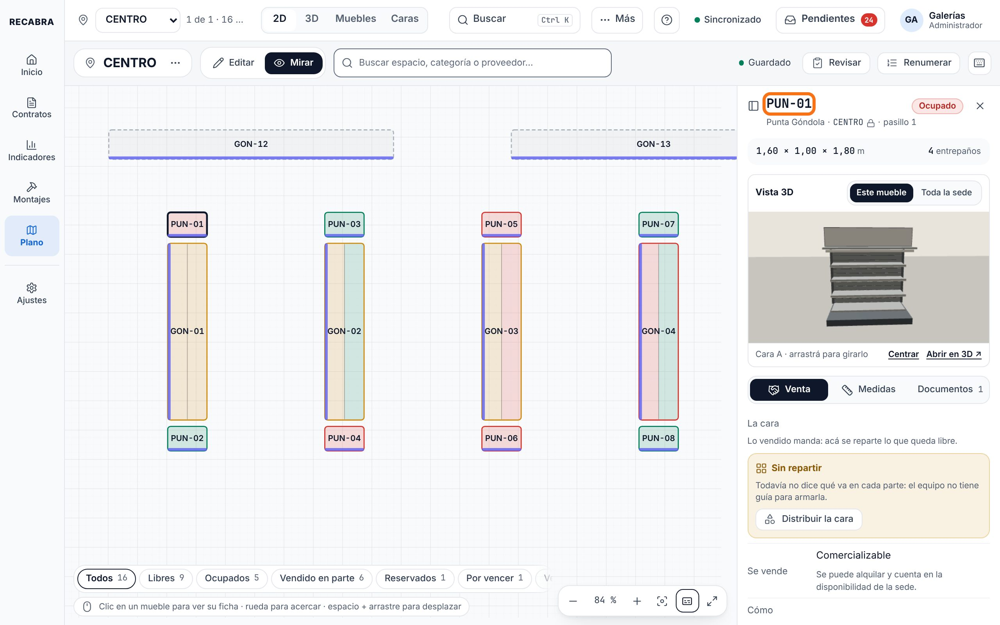</figure></li>
  </ol>
  <p>La × de arriba (o <b>Esc</b>) cierra la ficha. <span class="texto-pantalla">Abrir en 3D ↗</span> lleva al mueble en el 3D (7.11).</p>

  <h2 class="proceso">7.4 Agregar un mueble del catálogo</h2>
  <p class="cuando"><b>Cuándo:</b> la tienda puso un mueble nuevo, o estás dibujando una sede por primera vez.</p>
  <ol class="pasos">
    <li><p>En <span class="boton">Editar</span>, tocá en la tira de la izquierda el tipo de mueble (por ejemplo <span class="boton">Punta Góndola</span>). El número debajo de cada tipo es cuántos hay en la sede. Abajo dice <span class="texto-pantalla">Hacé clic en el lienzo para colocar · Esc para cancelar</span>.</p>
      <figure class="mitad">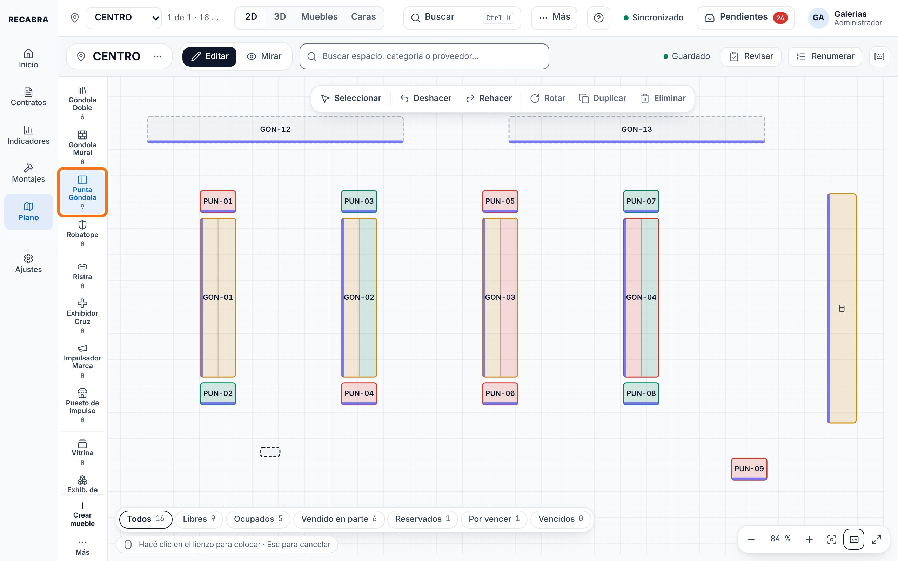</figure></li>
    <li><p>Hacé clic en el lugar del plano donde va. El mueble aparece con su medida estándar y un código nuevo que pone el sistema (acá, <code>PUN-10</code>). Tocalo para abrir su ficha.</p>
      <figure class="mitad">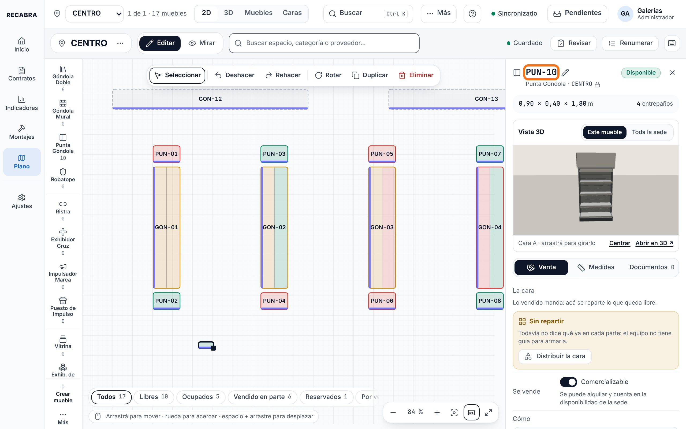</figure></li>
  </ol>
  <div class="caja truco"><span class="rotulo">Más tipos</span><p><span class="boton">Más</span>, al pie de la tira, abre el catálogo completo por familias (góndolas, displays, refrigeración…) y <b>Mis muebles</b>, los del supermercado (7.12). <span class="boton">Duplicar</span> pone una copia pegada al lado: sirve para armar una fila de góndolas iguales.</p></div>

  <h2 class="proceso">7.5 Moverlo y girarlo</h2>
  <ol class="pasos">
    <li><p>En <span class="boton">Editar</span>, arrastrá el mueble con el mouse hasta su lugar. Para girarlo 90°, elegilo y tocá <span class="boton">Rotar</span> (o la tecla <b>R</b>). Si te equivocaste, <span class="boton">Deshacer</span>.</p></li>
  </ol>
  <div class="caja error"><span class="rotulo">Si no se mueve</span><p>Fijate que estés en <span class="boton">Editar</span> y no en <span class="boton">Mirar</span>. Dos muebles no se pueden encimar: si lo soltás encima de otro, vuelve a su lugar.</p></div>

  <h2 class="proceso">7.6 Cambiarle el código y las medidas</h2>
  <p class="cuando"><b>Cuándo:</b> el mueble se llama distinto en la tienda o sus medidas no son las estándar.</p>
  <ol class="pasos">
    <li><p>Con la ficha abierta en <span class="boton">Editar</span>, tocá el lápiz al lado del código (<span class="texto-pantalla">Cambiar el código</span>), escribí el nuevo y apretá <b>Enter</b>. La pantalla te recuerda que el código <span class="texto-pantalla">Es el nombre y es la llave</span>: viaja al contrato, al correo de montaje y a la lámina del proveedor.</p>
      <figure class="mitad">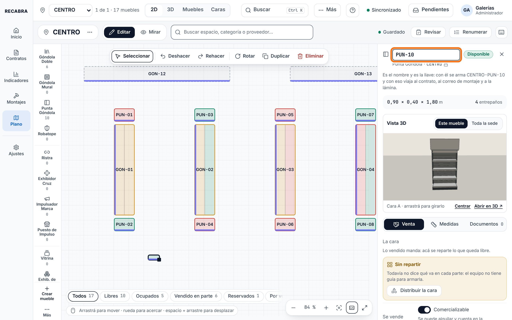</figure></li>
    <li><p>Tocá la pestaña <span class="boton">Medidas</span>: ancho, profundidad y alto en metros, cuántos <span class="texto-pantalla">Entrepaños</span> y el <span class="texto-pantalla">Módulo</span>. Vacío (<span class="texto-pantalla">auto</span>) usa la cuenta de siempre. Se guarda al salir del campo.</p>
      <figure class="mitad">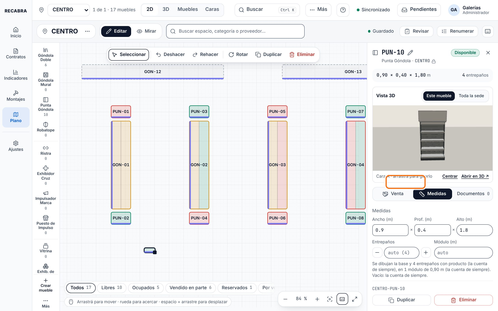</figure></li>
  </ol>
  <div class="caja ojo"><span class="rotulo">Ojo con el código</span><p>No cambies el código de un mueble con contratos para «ordenar» el plano: el código aparece en los correos y en la cartelería de la tienda. Para ordenar todos los códigos de una vez está <b>Renumerar</b> (7.10), que muestra antes qué cambia.</p></div>

  <h2 class="proceso">7.7 Cómo se vende cada mueble</h2>
  <p class="cuando"><b>Cuándo:</b> al agregar un mueble, o cuando la tienda decide venderlo de otra forma.</p>
  <ol class="pasos">
    <li><p>En la pestaña <span class="boton">Venta</span>, <span class="texto-pantalla">Se vende</span> dice si es <span class="texto-pantalla">Comercializable</span> (se alquila a proveedores) o es un mueble de la casa (no se vende: lleva planograma, capítulo 8). Debajo, en <span class="texto-pantalla">Cómo</span>, elegí una de las tres formas:</p>
      <figure class="mitad">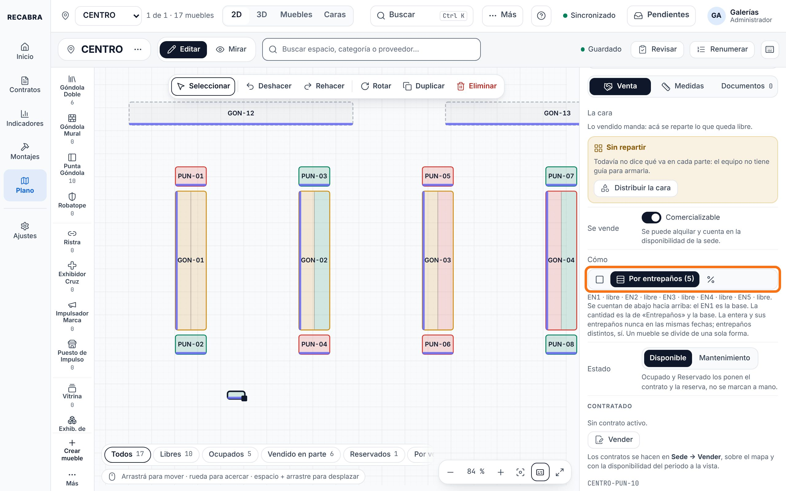</figure></li>
  </ol>
  <table>
    <tr><th style="width:26%">Forma</th><th>Qué se vende</th><th style="width:28%">Ejemplo de la siembra</th></tr>
    <tr><td><b>Entera</b></td><td>El mueble completo, a un proveedor.</td><td><code>PUN-01</code>, Limpio Hogar</td></tr>
    <tr><td><b>Por entrepaños</b></td><td>Cada estante por separado (<code>EN1</code> es el de abajo, la base). La ficha dice cuáles están vendidos y cuáles libres. La entera y sus entrepaños nunca en las mismas fechas.</td><td><code>PUN-03</code>: EN1 Café Montaña, EN2 Bebidas del Valle</td></tr>
    <tr><td><b>Por participación</b></td><td>Un porcentaje de cada cara (por ejemplo, el 25 %). Cada marca compra su % en Contratos y dónde va se dibuja con <span class="texto-pantalla">Distribuir la cara</span> (7.14).</td><td><code>GON-03</code>: 80 % vendido, queda 20 %</td></tr>
  </table>
  <div class="caja ojo"><span class="rotulo">Con contratos vivos</span><p>Un mueble se divide de una sola forma. Si tiene contratos vivos, cambiar la forma deja esos contratos sin lugar: hacelo cuando esté libre, o cuando terminen.</p></div>

  <h2 class="proceso">7.8 Borrar un mueble</h2>
  <p class="cuando"><b>Cuándo:</b> el mueble ya no está en la tienda.</p>
  <ol class="pasos">
    <li><p>En <span class="boton">Editar</span>, abrí la ficha y tocá <span class="boton">Eliminar</span> al pie (o la tecla <b>Supr</b>). Un mueble <b>libre</b> desaparece enseguida; si fue un error, <span class="boton">Deshacer</span> lo trae de vuelta.</p>
      <figure class="mitad">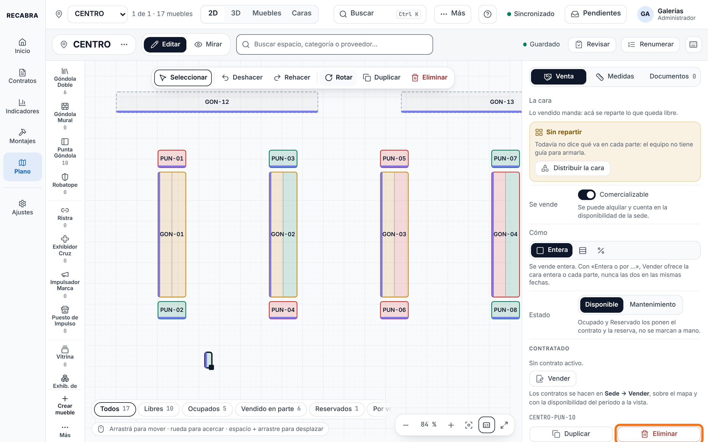</figure></li>
    <li><p>Un mueble <b>con contrato vivo</b> no se puede borrar: arriba aparece en rojo <span class="texto-pantalla">Rechazado por el servidor</span> y el aviso <span class="texto-pantalla">El servidor no guardó el plano</span>, con el contrato que lo impide.</p>
      <figure class="mitad">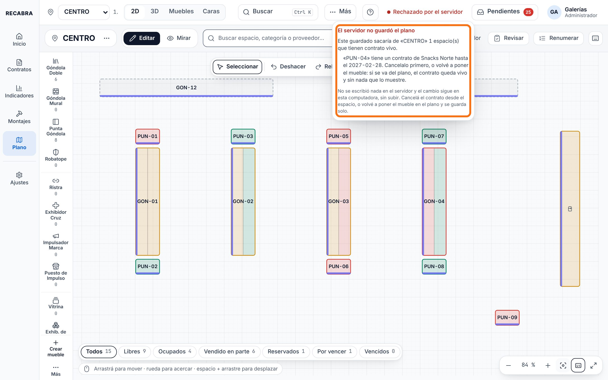</figure></li>
    <li><p>Tocá <span class="boton">Deshacer</span>: el mueble vuelve y el plano se guarda solo. Si de verdad hay que sacarlo, primero cancelá el contrato (capítulo de Contratos) y después borralo.</p></li>
  </ol>
  <div class="caja ojo"><span class="rotulo">Lo que no se deshace</span><ul>
    <li>Mientras dice <span class="texto-pantalla">Rechazado por el servidor</span>, el cambio vive <b>sólo en tu computador</b>. No cierres la pestaña sin <span class="boton">Deshacer</span>.</li>
    <li>Una vez guardado, borrar un mueble libre se lleva su historia del plano (la nota, los documentos). Deshacer sólo sirve mientras sigas en esa pantalla.</li>
    <li>Si alguna vez un contrato queda vivo sobre un espacio que ningún plano dibuja, aparece en <b>Pendientes › Corregir</b> como <span class="texto-pantalla">Contrato sin mueble en el plano</span>.</li>
  </ul></div>

  <h2 class="proceso">7.9 Revisar el plano</h2>
  <p class="cuando"><b>Cuándo:</b> después de dibujar o cambiar varios muebles, antes de vender.</p>
  <ol class="pasos">
    <li><p>Tocá <span class="boton">Revisar</span>, arriba a la derecha. Busca <b>códigos repetidos</b>, <b>muebles encimados</b> y <b>pasillos angostos</b>. Si todo está bien dice <span class="texto-pantalla">El plano está limpio</span>; si no, lista cada problema para ir a corregirlo.</p>
      <figure class="mitad">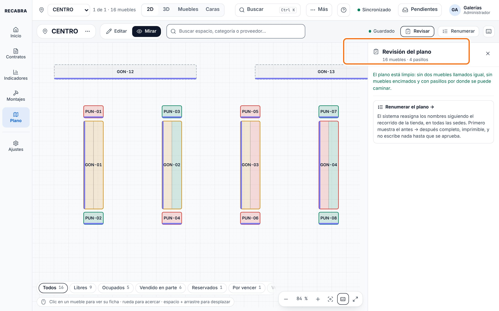</figure></li>
  </ol>

  <h2 class="proceso">7.10 Renumerar (ordenar los códigos)</h2>
  <p class="cuando"><b>Cuándo:</b> rara vez. Cuando los códigos quedaron desordenados y querés que sigan el recorrido de la tienda. Habladlo antes con la gerencia: cambia la cartelería.</p>
  <ol class="pasos">
    <li><p>Tocá <span class="boton">Renumerar</span> (también está en Ajustes › Sede y plano › <span class="texto-pantalla">Ordenar códigos</span>). Se abre un <b>informe previo</b>: <span class="texto-pantalla">Previo: no se escribió nada todavía</span>, cuántos muebles cambian de nombre, cada renglón con el código de antes y el de ahora, y los contratos que se mudan con su mueble. <span class="boton">Imprimir</span> lo saca en papel para llevarlo a la tienda.</p>
      <figure class="mitad">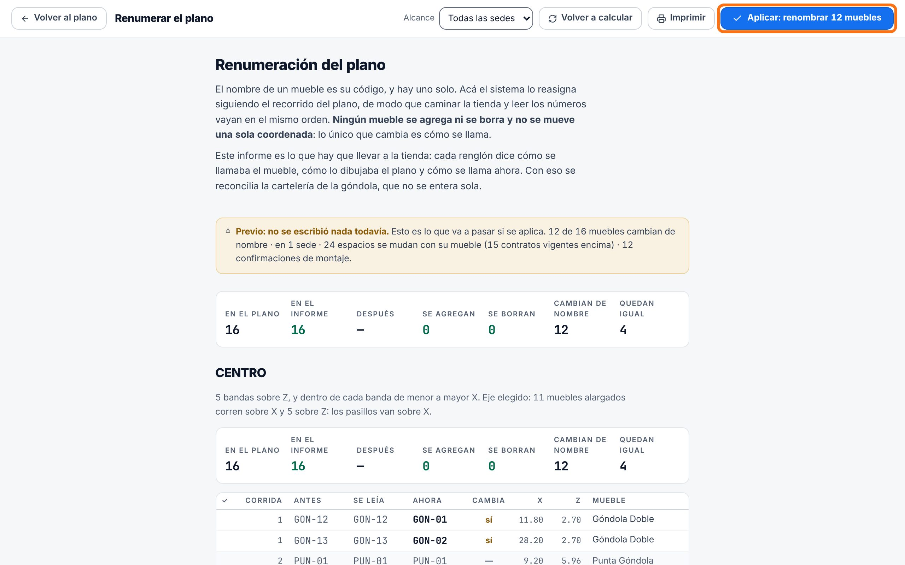</figure></li>
  </ol>
  <div class="caja ojo"><span class="rotulo">No se puede deshacer</span><p><span class="boton azul">Aplicar: renombrar N muebles</span> cambia los códigos de verdad, en todas las sedes del <span class="texto-pantalla">Alcance</span>. Los contratos y montajes siguen a su mueble, pero la gente de la tienda y los proveedores conocen los códigos viejos. No lo apliques sin el informe impreso y sin avisar. Si no estás seguro, tocá <span class="boton">Volver al plano</span>: no pasa nada.</p></div>

  <h2 class="proceso">7.11 El 3D, para mirar</h2>
  <p class="cuando"><b>Cuándo:</b> para recorrer la tienda, mostrarle al proveedor dónde queda su espacio, o repartir una cara por porcentaje.</p>
  <ol class="pasos">
    <li><p>Arriba, tocá <span class="boton">3D</span>. A la izquierda, en <span class="texto-pantalla">MIRAR</span>: <span class="texto-pantalla">Recorrer la tienda</span> (arrastrá para girar, rueda para acercar), <span class="texto-pantalla">Primera persona</span> (caminar por los pasillos), <span class="texto-pantalla">Con el arte del proveedor</span> y <span class="texto-pantalla">Productos y distribuciones</span>. Arriba a la derecha: <span class="texto-pantalla">Cenital</span>, <span class="texto-pantalla">PNG</span> (una imagen para mandar) y <span class="texto-pantalla">Presentar</span> (pantalla limpia para mostrar).</p>
      <figure class="mitad">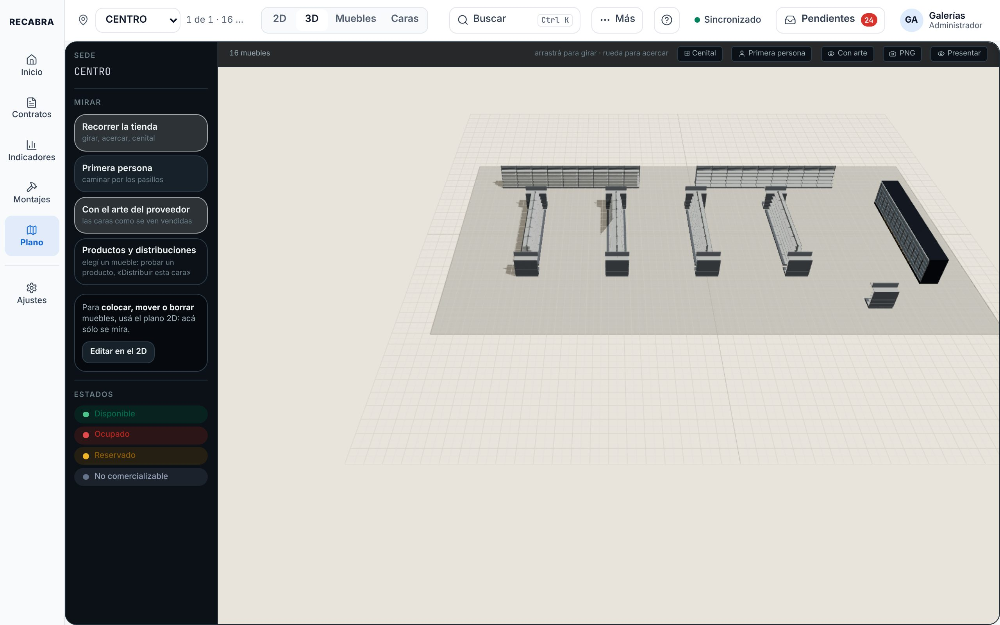</figure></li>
  </ol>
  <div class="caja avisale"><span class="rotulo">Con el proveedor adelante</span><p>Usá <span class="texto-pantalla">Presentar</span>: esconde los menús. El 3D <b>no muestra precios</b>, pero los Contratos e Indicadores sí: no los abras con el proveedor mirando. Para mover o borrar muebles, el 3D dice <span class="texto-pantalla">usá el plano 2D: acá sólo se mira</span> y ofrece <span class="boton">Editar en el 2D</span>.</p></div>

  <h2 class="proceso">7.12 Mis muebles: crear un mueble con tus medidas</h2>
  <p class="cuando"><b>Cuándo:</b> la tienda tiene un mueble que no mide como el estándar (una punta más angosta, una nevera más alta).</p>
  <ol class="pasos">
    <li><p>Arriba tocá <span class="boton">Muebles</span> y después <span class="boton azul">Crear un mueble</span>. La lista muestra los que ya armaste; <span class="texto-pantalla">Retirados</span> guarda los que ya no se ofrecen.</p></li>
    <li><p><b>Paso 1 · Qué mueble es:</b> elegí el más parecido (acá, <span class="boton">Punta de góndola</span>). <span class="texto-pantalla">Empezar desde</span> copia las medidas de un modelo; si no sabés, dejá <span class="texto-pantalla">Medida estándar</span>. Tocá <span class="boton azul">Siguiente: medidas →</span>.</p></li>
    <li><p><b>Paso 2 · Cuánto mide:</b> ancho, fondo y alto <b>en centímetros</b>, con − y +. <span class="texto-pantalla">Por dentro</span>, los entrepaños; vacío es <span class="texto-pantalla">Automático</span>. El dibujo de la derecha cambia mientras escribís. Tocá <span class="boton azul">Siguiente: nombre →</span>.</p>
      <figure class="dos pc">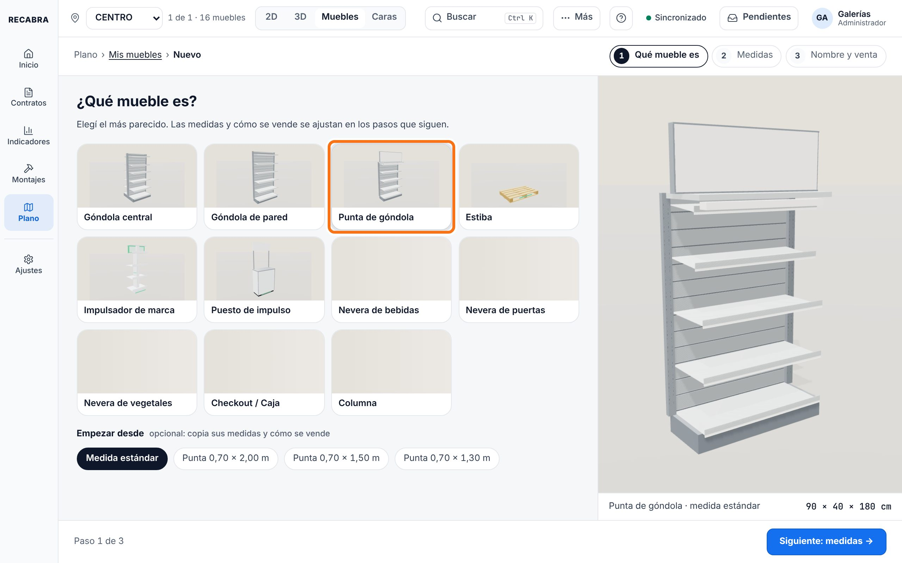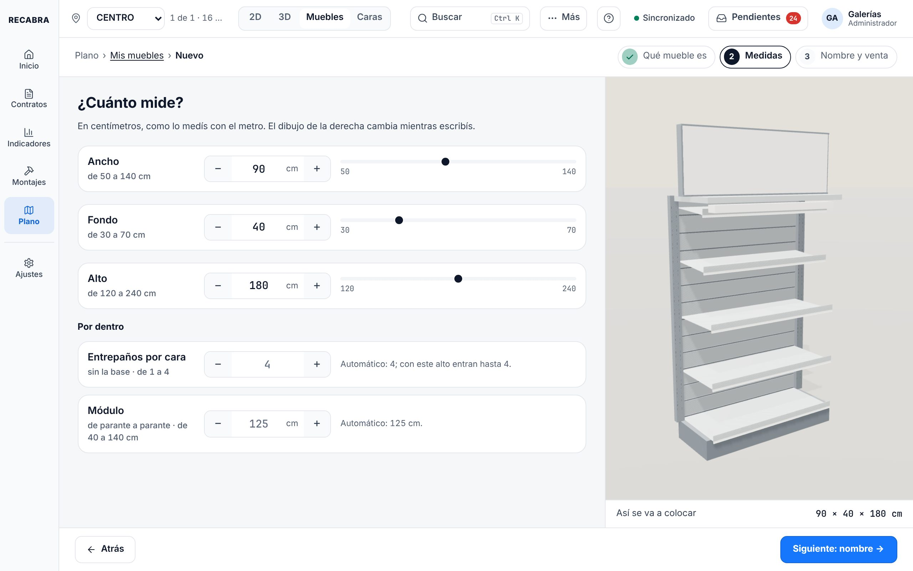</figure></li>
    <li><p><b>Paso 3 · Nombre y cómo se vende:</b> escribí el nombre, elegí <span class="texto-pantalla">Cómo se vende</span> y de dónde salieron las medidas (<span class="texto-pantalla">Las medí en la tienda</span> no pide nada más). Tocá <span class="boton azul">Guardar mueble</span>.</p></li>
    <li><p>Listo cuando ves <span class="texto-pantalla">«Punta corta de pasillo» ya está en Mis muebles</span>. <span class="boton azul">Colocar en el plano de CENTRO</span> vuelve al 2D con el mueble elegido: un clic en el plano y queda puesto.</p>
      <figure class="dos pc">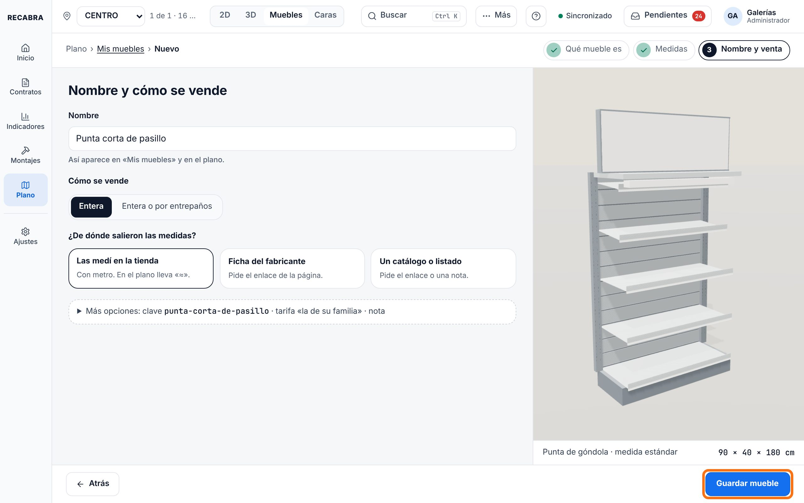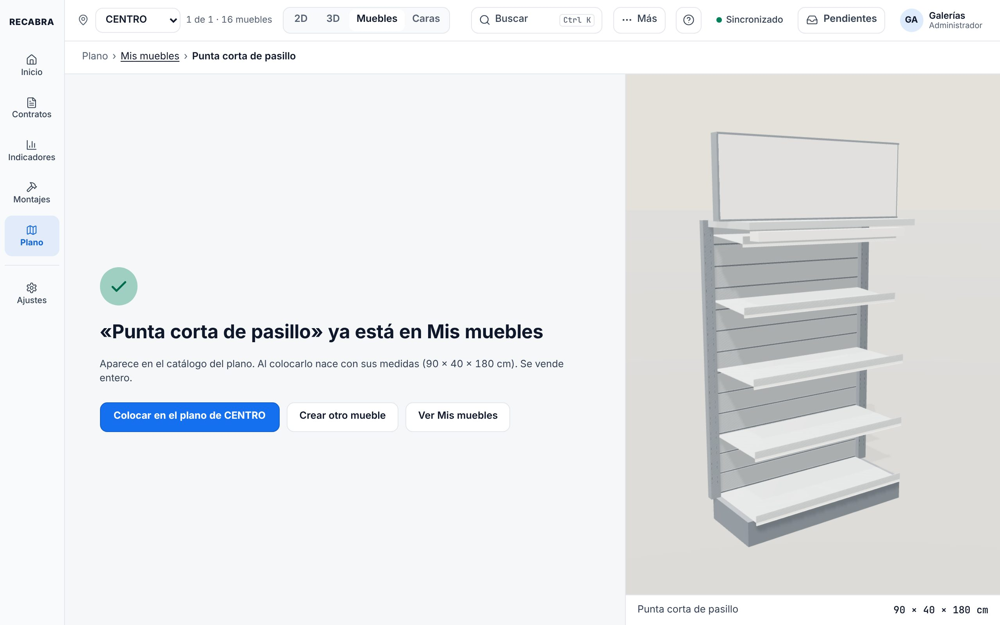</figure></li>
  </ol>
  <div class="caja error"><span class="rotulo">Si te equivocás</span><p>En la lista, <span class="boton">Editar</span> cambia las medidas (la familia y la clave no). <span class="boton">Retirar</span> lo saca del catálogo; lo que ya está colocado en el plano sigue igual.</p></div>

  <h2 class="proceso">7.13 Caras: la lista de control</h2>
  <p class="cuando"><b>Cuándo:</b> una vez por semana, para ver qué caras no tienen guía o tienen el montaje para revisar.</p>
  <ol class="pasos">
    <li><p>Arriba tocá <span class="boton">Caras</span>. Cuatro cajas resumen la sede: <span class="texto-pantalla">Sin repartir</span> (el equipo no tiene guía), <span class="texto-pantalla">En curso</span> (borrador o todavía no rige), <span class="texto-pantalla">Para revisar</span> (venció, el mueble cambió o el montaje falló) y <span class="texto-pantalla">Listas</span>. Debajo, una fila por cara con qué va, su versión, cómo va el montaje y su botón.</p>
      <figure class="mitad">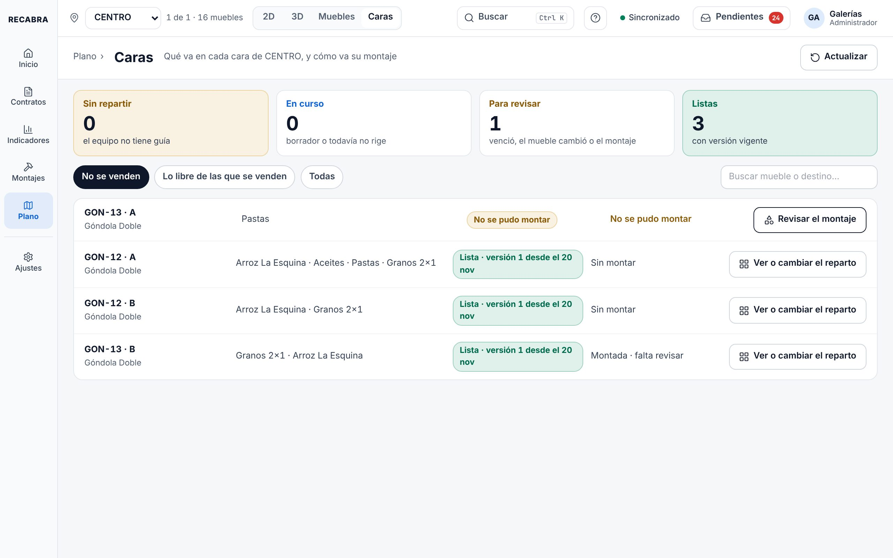</figure></li>
  </ol>
  <p>Los filtros: <span class="texto-pantalla">No se venden</span> (las góndolas de la casa, el de entrada), <span class="texto-pantalla">Lo libre de las que se venden</span> y <span class="texto-pantalla">Todas</span>. Primero aparece lo que pide algo.</p>

  <h2 class="proceso">7.14 Distribuir una cara vendida por porcentaje</h2>
  <p class="cuando"><b>Cuándo:</b> se vendió un % de una cara y hay que decir dónde va cada marca. Pendientes lo avisa como <span class="texto-pantalla">Falta distribuir</span>.</p>
  <ol class="pasos">
    <li><p>Abrí la ficha del mueble (acá <code>GON-03</code>). En <span class="texto-pantalla">La cara</span> dice <span class="texto-pantalla">Se vende por porcentaje: cada marca compra su % en Contratos y acá se ubica dónde va</span>. Tocá <span class="boton">Distribuir la cara A</span>.</p>
      <figure class="mitad">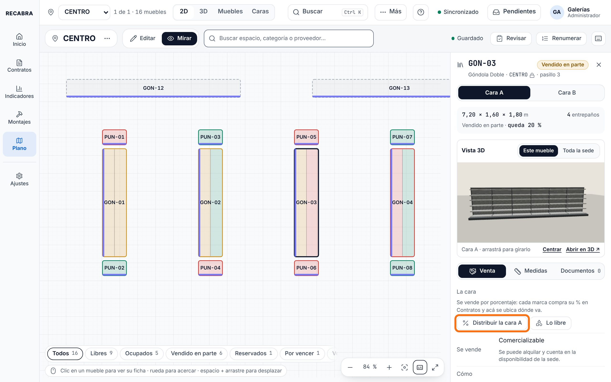</figure></li>
    <li><p>Se abre <b>Distribuir la cara</b> (en el 3D). Cada marca contratada aparece como una pieza con su %; el sistema las acomoda solas en franjas y lo libre queda en verde. Arrastrá una pieza para cambiarla de lugar; <span class="texto-pantalla">Así queda en 3D</span> lo muestra. Cuando esté bien, tocá <span class="boton azul">Listo, guardar la cara</span>.</p>
      <figure class="mitad">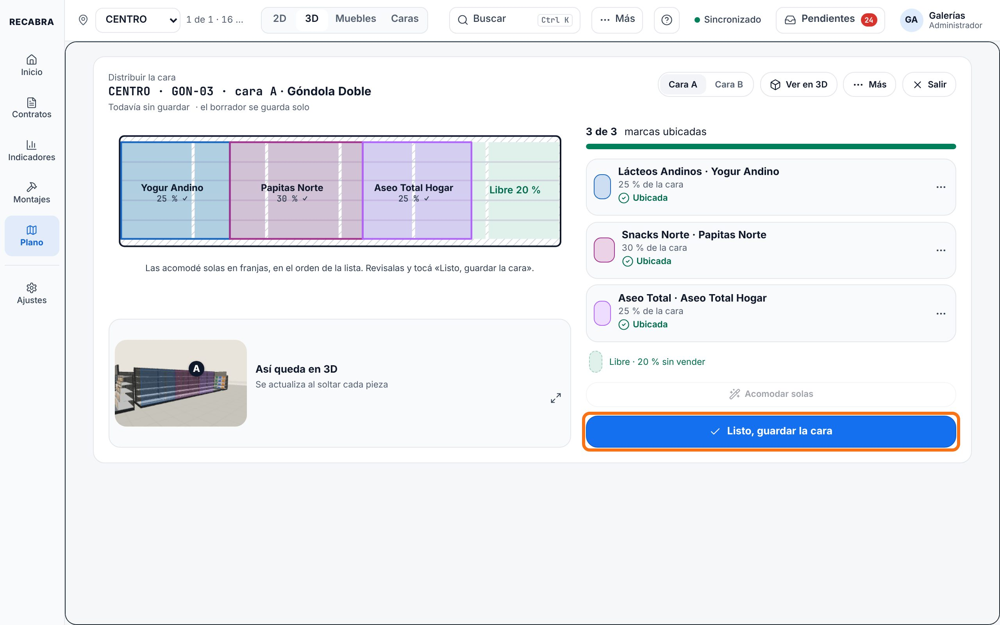</figure></li>
    <li><p>Listo cuando ves <span class="texto-pantalla">Listo: GON-03 · cara A quedó distribuida.</span> A cada marca le llega el aviso de montaje con su lugar.</p></li>
  </ol>
  <div class="caja ojo"><span class="rotulo">Lo vendido manda</span><p>El % de cada marca lo fija su contrato: acá sólo se decide <b>dónde</b> va. Para cambiar cuánto tiene una marca, se edita el contrato. Lo que queda libre de una cara vendida se puede planificar con un destino de la casa (<span class="boton">Lo libre</span>, capítulo 8).</p></div>
</section>
